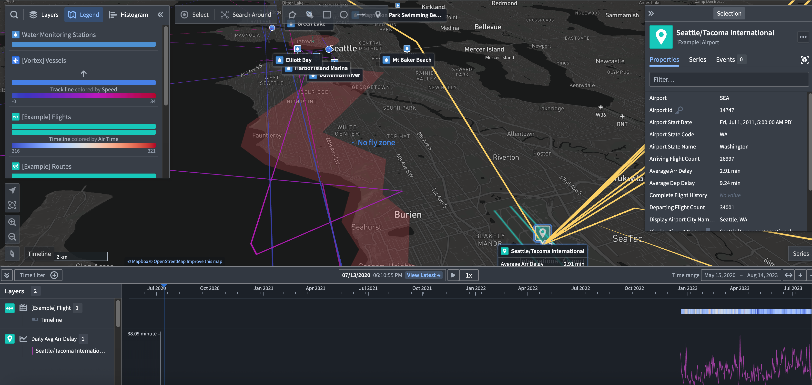

Map
The Map application provides powerful geospatial and temporal analysis and visualization capabilities, allowing you to integrate data from across Foundry into a cohesive geospatial experience:
- Explore connections between geospatial objects, traverse physical networks.
- Search geospatially for point and polygon data, using bounding box and polygon intersection queries.
- Visualize contextual geospatial data from a variety of sources, including high-scale vector data and satellite imagery, and temporal data such as paths of object movements over time, and events.
- Interact by drawing shapes and performing geospatial actions.
- Build geospatial applications using map templates.

Geospatial data on the Map
The Map application renders maps using the Web Mercator Projection â (EPSG:3857), and expects latitude/longitude coordinates in WGS 84 degrees (EPSG:4326). See Geospatial data in Foundry for more information on transforming geospatial data in Foundry.